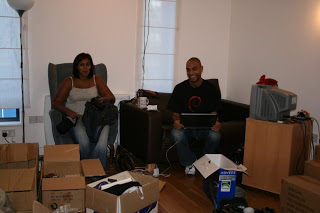

Notebook of a Return to My Native Land - part 5
Tuesday, December 12, 2006
Angolan Red Tape
While I was moaning about our lovely Angola, my cousin Elsa sent me the following reply, which I found so enlightening I just had to share with everyone. My translation does not do justice to the original, so I've attached her email below. For the non-portuguese, a "bridge" happens when a national holiday falls on a Tuesday or a Thursday, and basically means that people don't turn up to work on the Monday or Friday. A holiday on a Wednesday may also result in a two day bridge…
I would like to placate your despair somewhat as I will be joining you soon on the battle against Angolan red tape. On top of my to-do list, as soon as I reach our beloved motherland, is to renew my ID card and passport! I started doing the usual prayers, since one has to exclude Fridays (which, of course are reserved as weekend preparation), the Mondays that follow Friday holidays, the bridges that follow the previous' week's mid-week holidays, the preparation for Christmas and New Year, etc… And we still have to pray that there are no rainy days, days in which it is impossible to have any functioning public services (the imaginary quote "Rain is the number one enemy of public work" will one day be said by an eminent Angolan authority, who has to sort out her paperwork); Mental note for any wannabe-users of the Angolan public services: Angola is the number one country in the WORLD when it comes to the sheer number of national holidays! And rain is the number two national catastrophe – number one is of course lack of that item essential for the survival of any Angolan, "birra", also known as beer… True, we are not quite yet in the rainy season but we all know that the most unexpected events always happen when you need to sort things out… That's how it goes… Contingency plan? We haven't got one yet but probably - as a person who can choose between the best of both worlds - I'll get an Angolan visa on my Portuguese passport, just so that, god forbid, if I can't get my Angolan documents sorted out in time, I'll at least get out of the country in time to celebrate Easter with the family… Well… If it does rain I might as well forget about sorting out the passport and the ID card; at least, as a consolation, there's nothing in the world that quite compares to the smell of red earth wet with the worm rain…
Original:
Só queria minorar o vosso desespero juntando-me à vossa batalha pelo ultrapassar das angustias de combater a burocracia angolana partilhando com vocês a noticia de que no topo da minha lista dos afazeres assim que pisar o solo da pátria é renovar o BI e o passaporte! já comecei as minhas rezas uma vez que tirando as sextas feiras que são, claro, de preparação para o fds, as segundas seguidas de fds em que a sexta
foi feriado, as pontes a seguir aos feriados a meio da semana, preparação para as festas do natal e ano novo, etc… ainda temos de rezar para que não haja dias de chuva, dias em que se torna impossível ter algum serviço público funcional ( "a chuva é o inimigo nº1 do funcionalismo publico" , não disse, mas diria qualquer erudito angolano que tivesse duas semanas para tratar da sua identidade caducada algures em meados de 2001); Nota para futuros utilizadores do aparelho estatal angolano: Angola é o país com mais feriados nacionais do MUNDO!!!! A chuva é a 1ª catástrofe nacional a seguir à falta do bem essencial para a sobrevivência de qualquer angolano que se preze, a "birra", vulga cerveja… é claro que não estamos propriamente na altura das chuvas, mas por experiência própria há alguma coisa que não aconteça quando realmente precisamos de alguma coisa? Pois é… O plano de contingência? Ainda não há, mas provavelmente como detentora do melhor de dois mundos terei de apor um visto angolano no meu passaporte português, para que, caso não consiga documentos angolanos em tempo útil, possa pelo menos sair do país a tempo de festejar a Páscoa com a família… Bem… resta o consolo de que se realmente chover posso não ter nem BI nem passaporte, mas não existe nada que se compare ao cheiro da terra vermelha molhada pela chuva quente…
The Eye of the Storm
The last few days in London were rather convoluted. Many, many things happened in those ten or so days. It felt pretty much as if we were riding a high-speed roller-coaster, and the only way to stay on was to work till exhaustion. The daily routine involved waking up around eight in the morning, doing endless chores and going to sleep around one or so in the morning. Of course, this being us - renowned for our sleeping ability - occasionally we had to take some time for a siesta in the afternoon. But mostly we worked.
I just recall these days as one big blur.
On hindsight, my decision of leaving work so late was not a win. At the time, things looked pretty much under control at home so when the guys asked me to stay for a bit longer I didn't think twice. Work was in a bit of a state and I wanted to leave things in order. However, Shahin and I underestimated the amount of things that needed to be done at the end. This was to some extent because we were basing ourselves on Shahin's travelling experiences with Chris and Sham, which gave us a great baseline for organisation. After all, they are the most organised people we know. What we didn't realise at the time was that we had four additional things that made matters more complicated by several orders of magnitude: a) our visas were difficult to obtain b) I was working all hours of the day c) we had a company to sort out; and d) we were moving out of our flat.
I've already explained some of the fun we had getting the Angolan visas. I must say all other visas were trivial to obtain; but we still had to take two half-days to go to the Mozambique embassy, and this was at a point where time was at a premium.
With regards to work, I was rather busy just before leaving. I was chasing an annoying bug deep in the guts of the glue layer between the analytics (quants) engine and the user interface. This bug proved to be rather elusive, and it took all of my might plus some of Sushila's to be able to track it down. We had to work some very long hours but we did it in the end.
Sorting the company things also took its time. In particular going through year end accounts at midnight after a very, very long day in a very, very long week was not nice.
And we also had to buy the remaining items. These were not many, since Shahin had been at it for three months, but there were still a few scattered ones and they required trekking around London.
All these things pale in comparison to moving.
Voortrekkers
The logistics of moving were daunting. Its hard to believe we actually made it. We had to pack everything up we wanted to keep, bin everything else or give it away, ship all the items to the four "storage" locations provided by family (none within walking distance of another or of our flat), clean the flat, sort out the closure of all the utility bills, sort out the change of address, say goodbye to as many friends and family as possible and many, many other things that I have by now managed to erase from my brain. This was exhausting.
We ended up doing several trips on public transport taking bits and pieces because the cars we were going to use to move were not big enough (conversely, one could say we had far too much stuff, but we'll leave that to the discretion of the reader…). When things got desperate, we used cabs as well. One of the highlights was the day when took a load to my sister's house in North London early in the morning (a fairly large load, it must be said), rested for half-an-hour, went to the Mozambican embassy, got back to our flat and left almost immediately to take a massive load (and I mean massive) to Shahin's mom. On the train. We got back to the flat late, only to find that there was still lots of stuff left to ship. The house just did not want to empty itself. It was a Sisyphean task.
You have to understand, we didn't expect the move to be an issue. We planned it well in advance. When we moved from Southampton we left huge amounts of boxes at my sister's house and we gave away everything we did not need. So it was a great surprise to find that we still had so many things. "The more things you own, the more things own you.". At this point, I was ready to take my vows and join a Buddhist monastery. Getting rid of all the material things seemed like the only thing to do. I suppose I had a bit of an epiphany: I suddenly realised how hard it is to own absolutely nothing.

In the midst of this delirious state, someway, somehow we managed to get to a point were things could mostly fit in the two small cars. This was just in the nick of time, as we had organised with Sham and Mina to come and pick up the stuff on the Sunday. After some of the usual heated discussions common to the Begum women - on which we almost lost one of the cars - things got underway.
A special mention must be made to the efficiency of the inhabitants of Bethnal Green, fondly known as the "Bethnal Green massive innit" crew. We had a set of shelves, a desk and a chair, all in pretty good condition. We were worried these items were going to end up in a council dumpster somewhere, with so many people in need of good furniture. None of our friends and family needed these items. We tried to sell them or even give them away to local second hand shops, to no avail. We even mentioned it to local shop owners, which were by now our good friends, but nobody needed them. Just as we were contemplating calling the council and organising a pick-up, Shahin convinced us (us being me and Afaj) to leave it under the bridge and see if anyone from the local council estate would want it. For those who have seen Lord of War, the events that followed were almost identical to the fast disassembling of an entire plane in the middle of the African savanna. We had people around the goods in no time. In fact, people were already there collecting things whilst we were dropping off the rest. Some of the characters looked a little bit shady and my ghetto-sense started tingling; we wouldn't want people collecting things other than the ones we were giving away - in particular the items which we were loading in the cars. But the "massive" crew was law-abiding and all was well in the end.
Thanks to the help of Afaj, Chris, Sham and Mina we managed to get all the goods to the Herts "storage" locations.
Hello and Goodbye
Unfortunately, we didn't manage to say goodbye to most people. There just wasn't enough hours in the day. I remember looking at my Google calendar and seeing a sea of red and blue, appointments of all shapes and sizes.
The only exceptions where those who invited themselves and came up to our flat: Natalie, Stacey and Jay, JC, Nantha, Sam, Chris and Sham, Afaj, Mina. Of course, we made sure they all packed and cleaned while chatting; and they all left with as many things as they could possibly take.
Everyone else will have to wait until summertime, unless we bump into you on our travels.
Exhaustion
On Wednesday, the day of our departure, we still had to take stuff to my sister's house and clean the flat. We were thoroughly exhausted and we had no thoughts in mind other than to rest. Somehow we managed to sort out the flat and get the stuff to my sister's. But then, both the buses and trains from North London to Heathrow were not working. Incredible. We ended up taking a cab, which was just as well with the amount of stuff we had on us.
We met up with Chris and Sham at the airport, sorted out last minute details, including getting Sham and Chris to buy us an extra bag for our tent and sleeping bags; we then had some food and were on our way.
On our way to deep sleep, that is.